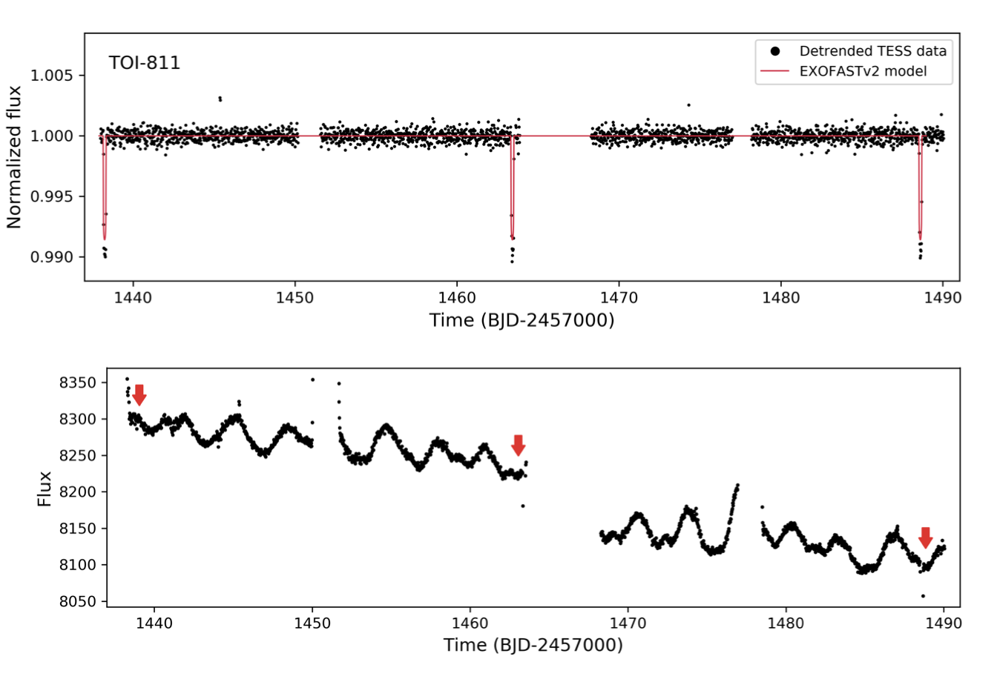
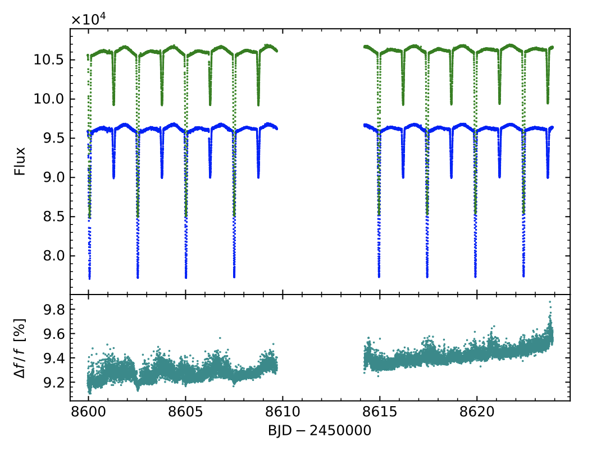

STATUS UPDATE: Sector 28 is going live!
Hello TESS followers and welcome to our weekly news bulletin! This week we have three papers from the archive in addition to two exciting notices.
First, the notices.
The TESS GI office is running a special session at this winters AAS. The session is entitled “Mining TESS Data with Machine Learning and Other Advanced Methods”. If you would like to give a talk within this session please submit your abstract to AAS by Oct 6th!
Would you like to be involved in removing planet imposters? Automated methods of processing data from the TESS planet-finding mission sometimes fail to catch imposters that look like exoplanets. The human eye, however, is extremely good at spotting these troublemakers. So we’re asking you to lend NASA a hand. No prior interplanetary law enforcement experience is necessary. If you would like to take part in this please see the Planet Patrol citizen science project which is live at exoplanetpatrol.org.
Now, onto the papers.
TOI-811b and TOI-852b: New transiting brown dwarfs with similar masses and very different radii and ages from the TESS mission (Carmichael et. al., 2020):
In this paper the authors present the discovery of two transiting brown dwarfs, TOI-811b and TOI-852b using TESS data.
TOI-811b has a mass Mb = 55.3 MJ, radius of Rb = 1.35 RJ, and orbit of P = 25.16551. The age of this system is 93 Myr, this is why the brown dwarf has a larger radius and in a longer orbit, which is unusual.
TOI-852b has a mass Mb = 53.7MJ, radius of Rb = 0.75 RJ, and orbit of P = 4.9456.The TOI-852b system is 4.0 Gyrs old, and is similar to other older brown dwarf transiting systems.
The host stars of both these systems are 1.32 M⊙, but differ in their radii, effective temperatures, and metallicities.
Analysis of eclipsing binaries in multiple stellar systems: the case of V1200 Centauri (Marcadon et. al., 2020):
The authors of this paper have used TESS data in combination with that from other facilities to investigate V1200 Centauri. Data was collected from TESS, the Solaris network, and the CHIRON spectrograph for radial velocities (plus additional data published in the literature).
Using the combined data set, the authors have determined that V1200 Cen consists of a 2.5-day eclipsing binary orbited by a third body. The properties of the primary were derived as MAa = 1.393 M⊙, RAa=1.407 R⊙ and Teff,Aa=6588 K. For the secondary the authors derived the following, MAb=0.8633 M⊙, RAb =1.154 R⊙, and Teff,Ab =4475 K.
The properties derived for the third body are significantly different to previously obtained results, with a period of 180.4 days and a minimum mass of MB = 0.871 M⊙. Given these results the authors argue that V1200 Cen is actually a quadruple system with a secondary pair composed of two low-mass stars.
Detection of the Occultation of 55 Cancri e with TESS (Kipping et. al., 2020):
Using TESS sector 21 photometry the authors have studied in detail the ultra-short period transiting Super Earth, 55 Cancri e.
The occultation depth has been measured as 15 ppm, which is a small change in brightness, but yet detectable by TESS. The brightness temperature of the object is determined as 2800 K, which is around 1.5 sigma greater than expected given the mean measured depth by Spitzer.

Fig 1. Taken from Carmichael et. al., (2020). The top panel is the de-trended TESS light curve of TOI-811. The bottom panel is the raw TESS light curve of TOI-811 with the locations of the transits marked by arrows. TOI-811 was observed in sectors 5 and 6 with TESS's 30 minute cadence. The star is seen to exhibit periodic flux variations on the order of a few percent, these are likely due to star spots based on the changes in the patterns of the modulation.

Fig 2. Taken from Marcadon et. al., (2020). The TESS V1200 Cen SAP flux light curve is in blue, and PDCSAP is in green. The relative flux difference is plotted in the lower panel. The linear trend seen in the flux difference was taken into account when fitting the SAP and PDCSAP light curves. The variability of the flux difference does not exceed 0.2%.